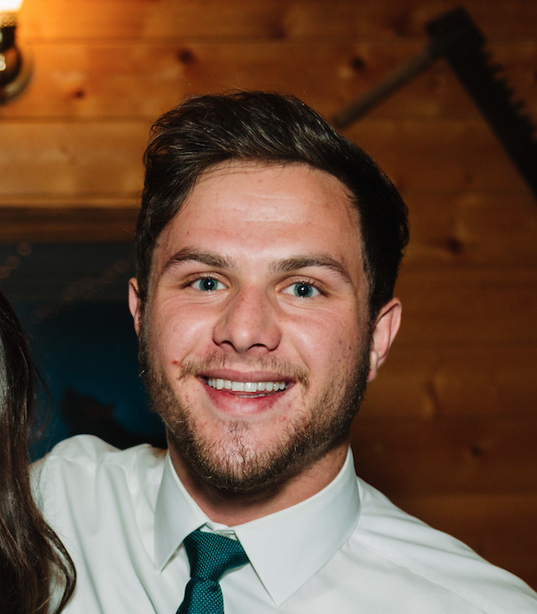

About Me

Jesse Childress has a deep appreciation for good food, philosophy, theology, and literature. He completed a B.A. in Interdisciplinary Studies at Houston Baptist University and intends to pursue graduate work in either literature or philosophy. He has written articles on culture, beauty, and literature for Summit Ministries, Conciliar Post, and The Anselm Society. Jesse’s recent adventures have included spending a term at the Francis Schaeffer-founded L’Abri Fellowship in Switzerland and becoming an online English teacher for students in China.